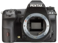

器材库 > APS及其以下画幅可换镜头数码相机 > K-3

规格总览
产品类型
APS画幅可换镜头数码相机
发布日期
2013-10-08
影像规格
影像传感器
CMOS
影像传感器尺寸
23.5×15.6mm
总像素
2471万
有效像素
2435万
影像处理器
PRIME III
低通滤镜
无
色彩空间
sRGB、AdobeRGB
静态图像尺寸
JPEG：L(24M：6016x4000)、M(14M:4608x3072)、S(6M:3072x2048)、XS(2M:1920x1280)
静态图像格式
JPEG, RAW, RAW+JPEG
静态图像质量
压缩：JPEG - Baseline （超精细,精细, 很好, 好）；压缩：RAW （PEF）；不压缩：RAW （DNG）
画幅比
3:2
短片尺寸
Full HD(1920x1080, 60i/50i/30p/25p/24p）、HD (1280x720, 60p/50p/30p/25p/24p)
短片格式
AVI
防抖系统
感光元件位移机构
除尘系统
超声波震动除尘功能
镜头和对焦
镜头卡口
Pentax AF
兼容镜头
PENTAX K-, KA-, KAF-, KAF2- and KAF3-卡口，螺口镜头（需使用转接环）；645-和67-系统镜头（需使用转接环）
对焦系统类型
TTL相位匹配11点宽区自动对焦系统（SAFOX X）
对焦点
具备27个自动对焦传感器（中央25点为十字型）
对焦模式
AF-S / AF-C / MF
曝光控制
测光模式
中央重点测光, 多分区评价测光, 点测光
测光范围
0EV~22EV
曝光模式
P（程序自动曝光）, B门, 感光度优先, A（光圈优先自动曝光）, S（快门速度优先自动曝光）, M（手动测光曝光）
快门类型
电子控制，纵走式，焦平面快门
快门速度
1/8000 - 30 秒
曝光补偿
±5EV
自动曝光锁
有
自动包围曝光
±0.5EV
ISO感光度
100, 200, 400, 800, 1600, 3200, 6400, 12800, 可扩展至80-51200
白平衡
白炽灯, 闪光灯, 阴天, 荧光灯, 阴影, CTE, 自动, 日落
自拍
12秒, 2秒
连拍
每秒8.3张，最多60张JPEG 或 23张RAW(PEF)
闪光灯
内置闪光灯
弹出式
闪光模式
P-TTL, 无线遥控
闪光指数
GN 13 (ISO 100)
闪光补偿
-2 至 +1EV以1/2EV级调整
取景器/显示屏
取景器
眼平五棱取景器
取景范围
100%
取景放大倍率
0.95倍
屈光度调节范围
-2.5 ～ +1.5
LCD类型
彩色TFT LCD
LCD尺寸
3.2英寸
LCD像素
103.7万
视野率
100%
文件输入/输出
存储卡
SD/SDHC, SDXC
数据接口
USB3.0 (micro B)
视频/音频接口
AV 输出, HDMI 输出, MIC 输入, Video 输出 (NTSC/PAL)
电源
电池
可充电锂离子电池 D-LI90P
续航能力
可拍摄720张照片
外接电源
AC适配器（可选配）
机身规格
材质
镁金属合金外壳
颜色
银色, 黑色
尺寸
131×100×77mm
重量
715g
muduo2016-03-01 17:324.75 分
操作性 4.50功能性 4.50美观性 5.00趣味性 4.50耐用性 5.00性价比 5.00解像力 4.50色彩还原 5.00
紫葳2016-01-02 12:504.94 分
操作性 5.00功能性 4.50美观性 5.00趣味性 5.00耐用性 5.00性价比 5.00解像力 5.00色彩还原 5.00
光影拍客2014-08-29 17:44
gzfanco2014-06-04 22:404.88 分
操作性 5.00功能性 5.00美观性 5.00趣味性 5.00耐用性 5.00性价比 4.50解像力 5.00色彩还原 4.50
铁牛哥哥2014-01-18 18:274.94 分
操作性 5.00功能性 5.00美观性 4.50趣味性 5.00耐用性 5.00性价比 5.00解像力 5.00色彩还原 5.00
2285080552013-10-10 00:024.69 分
操作性 4.50功能性 5.00美观性 4.50趣味性 4.50耐用性 5.00性价比 4.00解像力 5.00色彩还原 5.00
产品图 / 样片
评测 / 相关文章
- 详细内容 （存档）
- 打造APS-C旗舰 宾得K-3数码单反评测 （存档）
- ［试用］五年以后才明白，Pentax就是好玩儿 （存档）
- ［试用］宾得K-3银色限量版到手试机 （存档）
- ［资讯］支持宾得K-3 SILKYPIX软件升级 （存档）
- ［资讯］点评PENTAX K-3 （存档）
- ［资讯］理光映像正式发布PENTAX K-3 （存档）
- ［资讯］宾得K-3 官方样片 （存档）
相关文章
- ［试用］宾得慢门拍摄，恋上黄昏 （原站已下线）
- ［试用］称职的旅游相机 宾得K3拍摄体会 （原站已下线）
- ［试用］徕卡ELMARON 150/2.8改为m42口 （原站已下线）
- ［试用］PENTAX K-3威望版开箱图赏 （原站已下线）
- ［试用］打造APS-C旗舰 宾得K-3评测 （存档）
- ［试用］五年以后才明白，Pentax就是好玩儿 （存档）
- ［试用］宾得K-3银色限量版到手试机 （存档）
- ［资讯］支持宾得K-3 SILKYPIX软件升级 （存档）
- ［资讯］宾得K-3 （存档）
- ［资讯］点评PENTAX K-3 （存档）
- ［资讯］理光映像正式发布PENTAX K-3 （存档）
- ［资讯］宾得K-3 官方样片 （存档）